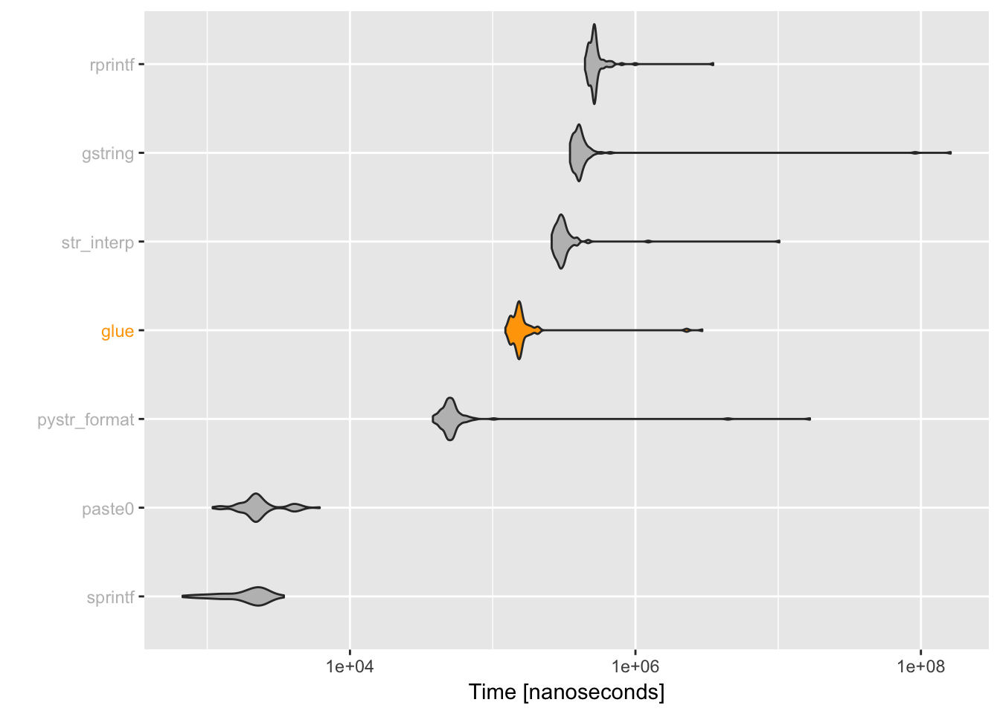
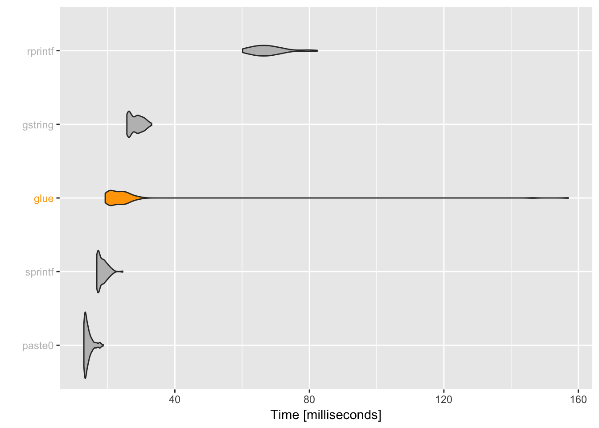

Glue is advertised as
Fast, dependency free string literals
So what do we mean when we say that glue is fast. This does not mean glue is the fastest thing to use in all cases, however for the features it provides we can confidently say it is fast.
A good way to determine this is to compare it’s speed of execution to some alternatives.
base::paste0(), base::printf() - Functions in base R implemented in C that provide variable insertion (but not interpolation).R.utils::gstring(), stringr::str_inperp() - Provides a similar interface as glue, but using ${} to delimit blocks to interpolate.pystr::pystr_format(), rprintf::rprintf() - Provide a interfaces similar to python string formatters with variable replacement, but not arbitrary interpolation.bar <- "baz"
simple <-
microbenchmark::microbenchmark(
glue = glue::glue("foo{bar}"),
gstring = R.utils::gstring("foo${bar}"),
paste0 = paste0("foo", bar),
pystr_format = pystr::pystr_format("foo{bar}", bar = bar),
sprintf = sprintf("foo%s", bar),
str_interp = stringr::str_interp("foo${bar}"),
rprintf = rprintf::rprintf("foo$bar", bar = bar)
)
print(unit = "eps", order = "median", signif = 4, simple)#> Unit: evaluations per second #> expr min lq mean median uq max neval cld #> rprintf 2.883e+02 1900 1951.058 1968 2115 2248 100 a #> gstring 6.382e+00 2397 2447.315 2493 2688 2854 100 a #> str_interp 9.663e+01 3272 3297.847 3389 3583 3883 100 a #> glue 3.594e+02 6314 6446.931 6619 7025 7936 100 a #> pystr_format 6.158e+01 18670 20068.661 20040 21560 27880 100 a #> paste0 1.229e+05 393000 468145.291 463100 513700 935500 100 b #> sprintf 2.580e+05 416100 538725.585 465800 613500 1230000 100 c
plot_comparison(simple)
While glue() is slower than paste0,sprintf() and pystr_format() it is twice as fast as str_interp() and gstring(), and on par with rprintf().
paste0(), sprintf() don’t do string interpolation and will likely always be significantly faster than glue, glue was never meant to be a direct replacement for them.
pystr_format() and rprintf() both do only variable interpolation, not arbitrary expressions, which was one of the explicit points of writing glue.
So glue is ~2x as fast as the two functions (str_interp, gstring) which do have roughly equivalent functionality.
It also is still quite fast, with over 6000 evaluations per second on this machine.
Taking advantage of glue’s vectorization is the best way to avoid performance. For instance the vectorized form of the previous benchmark is able to generate 100,000 strings in only 22ms with performance much closer to that of paste0() and sprintf(). NB. str_interp() and pystr_format() do not support vectorization, so were removed.
bar <- rep("bar", 1e5)
vectorized <-
microbenchmark::microbenchmark(
glue = glue::glue("foo{bar}"),
gstring = R.utils::gstring("foo${bar}"),
paste0 = paste0("foo", bar),
sprintf = sprintf("foo%s", bar),
rprintf = rprintf::rprintf("foo$bar", bar = bar)
)
print(unit = "ms", order = "median", signif = 4, vectorized)#> Unit: milliseconds #> expr min lq mean median uq max neval cld #> paste0 12.81 13.24 14.12517 13.65 14.41 18.11 100 a #> sprintf 16.81 17.24 18.08383 17.76 18.51 21.66 100 b #> glue 19.30 21.00 25.71188 22.55 25.74 158.50 100 c #> gstring 25.96 27.02 28.57572 27.96 30.14 34.33 100 c #> rprintf 60.26 63.50 66.00858 65.56 67.78 79.89 100 d
plot_comparison(vectorized, log = FALSE)